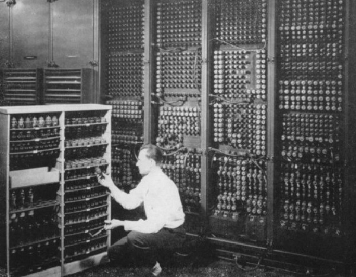
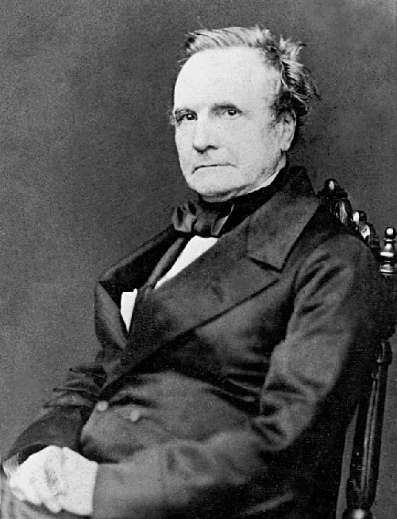
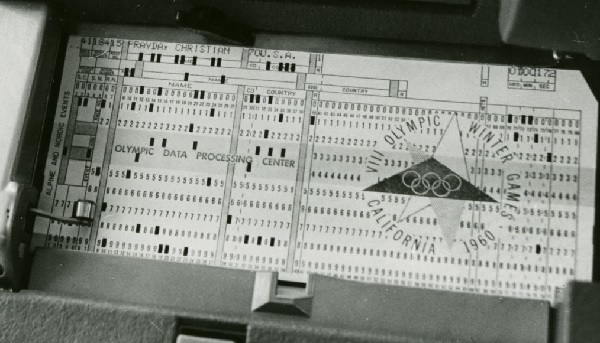
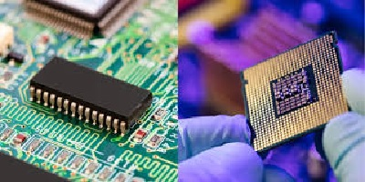
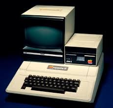
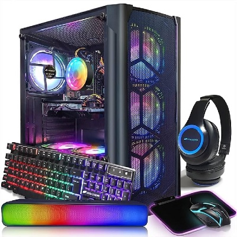
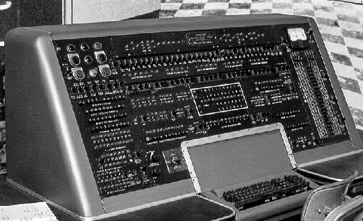

History of the Computer
In The Beginning ...
The history of computers dates back to about 2000 years ago, with the birth of the abacus. When the beads on the abacus are moved around, according to programming rules memorized by the user, all regular arithmetic problems can be done. In 1671, Wilhelm von Leibniz invented a computer that was built in 1694. It could add, and, after changing some things around, multiply. About a century later Thomas of Colmar created the first successful mechanical calculator that could add, subtract, multiply, and divide.

Other Memorable Events …
- In 1812, Charles Babbage realized that many long calculations were really a series of predictable actions that were constantly repeated. He began to design an automatic mechanical calculating machine, which he called a difference engine.
- Herman Hollerith and James Powers made a step towards automated computing with the development of punched cards. Reading errors were reduced dramatically, workflow increased, and stacks of punched cards could be used as memory of almost unlimited size. For more than 50 years, punched card machines did most of the world's first business computing.
- The start of World War II produced a large need for computer capacity. In 1942, John P. Eckert and John W. Mauchly decided to build a high - speed electronic computer to do the job. Known as ENIAC, this machine could multiply two numbers at a rate of 300 per second.
- Early in the 1950's two important engineering discoveries changed the landscape of the computer field - Core Memory and Transistor - Circuit Elements. These technical discoveries quickly found their way into computers. Such computers were mostly found in large computer centers operated by industry, government, and private laboratories.
- In the 1960's, efforts to design and develop the fastest possible computer with the greatest capacity reached a turning point with the Stretch computer by IBM. Stretch was made with the fastest access time, and total capacity in the vicinity of 100,000,000 words.
- Many companies, some new to the computer field, introduced programmable minicomputers supplied with software packages in the 1970's. The "shrinking" trend continued with the introduction of personal computers (PC's), which are programmable machines small enough and inexpensive enough to be purchased and used by individuals. Many companies, such as Apple Computer and Radio Shack introduced very successful PCs in the 1970's.
- By the late 1980's, some personal computers were run by microprocessors that, handling 32 bits of data at a time, could process about 4,000,000 instructions per second.
- Computer networking, e-mail and the Internet, and electronic publishing are just a few of the applications that have grown in recent years. Computers continue to decrease in price, offering the promise that soon, “computers will reside in most homes, offices, and schools”.





Great Computer Quotes ...

“Men are from Mars, Women are from Venus, Computers are from Hell.”
~Author Unknown
“Give a person a fish and you feed them for a day; teach that person to use the Internet and they won't bother you for weeks.”
~Author Unknown
“To err is human, but to really foul things up requires a computer.”
~Farmer's Almanac, 1972
Modern Computers ...
Computers have come a long way since the early electrical computers of the 1940s. Today's computers are much smaller and can compute far more processes in a fraction of a second. The first computers were only used for special tasks because they were so slow, today however, computers are used in almost every aspect of our lives. They are used to store large amounts of data, process information, and even help us communicate with others. Modern computers have become an essential part of our lives and will continue to be so in the future.
Components for Modern Computers
- Central Processing Unit or CPU
- Two Types of Storage: Hard Drive Disk (HDD) and Solid State Drive (SSD)
- Motherboard
- Random Access Memory or RAM
- Power Supply
- Fans
- Graphics Processing Unit or GPU
External Components
- Monitor
- Keyboard
- Mouse
- Microphone
- Speakers
- Web Camera
- Printer
My HTML Feature ...
For assignment 1: The feature I decided to add is the ability to create links that lead the user to sites outside of the page. I think this feature is extremely important for websites as it links various different sites together, making it easier to navigate the web. To create a clickable hyperlink within HTML, the tags are used to define a hyperlink, while the href= tag is used to specify the URL of the page the link goes to. With these tags, you can input text into the string that will be displayed on the page, and when clicked, will take the user to the specified URL.
For assignment 2: The feature I added this time is a CSS animation. CSS animations allow you to spruce up an HTML page with interesting animations which change an element from one style to another. Some examples are images or text fading in/out as the page loads and elements of the page spinning or sliding into place. To create a CSS animation, the operator @keyframe is used in CSS to create a definiton for the animation (ex: @keyframe fade-in) and then create a style that can be applied to a div tag. I applied a fade-in to the image in this section!